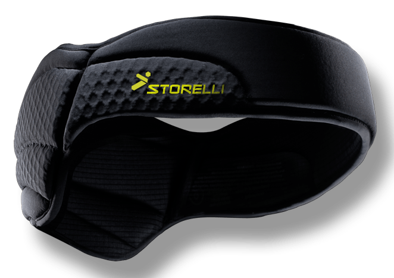

Irregularities in a Study on Soccer Headgear And Concussions
This week the British Journal of Sports Medicine (BJSM) published the results of a randomized trial of headgear to reduce concussions in soccer players.
Here’s an example of the type of headgear being investigated, in case you’re curious:

Before I jump in to my criticisms, I do want to commend the authors for running a randomized trial on an important question. Preventing concussions is a matter of physics. It’s all about dissipating collision forces so less of it transmits to your skull and shakes your brain inside of it. Helmets in sports like football were designed for a totally different engineering task: preventing skull fractures, which they’re great at. And as big of a concern as concussions have become, we only know of one surefire way to prevent them: stop collisions that shake people’s heads. All that is to say rigorous studies on new technologies that claim to protect the brains of sports participants from concussions are extremely important.
I also want to be upfront about what I expected this study to show, because scientists almost always approach a topic with some preconceived notions; we need to acknowledge and embrace that. I expected headgear to have virtually no effect on concussions.
And lo and behold, the randomized trial showed just that! So why am I writing this critical post?
Well, it’s dumb luck that I looked at this study more closely even though it confirmed what I expected to see. Someone tweeted out the main results table from the study and something didn’t look right – in fact, something was mathematically impossible (SEE Irregularity #2 below). That led me to read the whole paper, and there are some substantial irregularities in the analysis I want to call everyone’s attention to.
The below points aren’t my only concerns with the study, but they’re the biggest ones to which I want to call everyone’s attention.
Study Design Summary
The authors randomized 88 high schools to either wear or not wear some type of protective, purportedly concussion-reducing headgear over up to 2 seasons. The study involved 62 boys’ and 88 girls’ teams, 2,766 unique students, and 3,050 player-seasons.
If a school was randomized to the headgear group, the students were “allowed to individually choose which headgear model to wear for the season.” The students were not forced to wear headgear, nor does it appear the study funded the purchase of headgear for these students.
If a school was randomized to the non-headgear group, they were not prevented from wearing headgear should they so desire (that would’ve been pretty unethical!).
The students completed a baseline pre-season questionnaire each year. Then the schools’ athletic trainers (ATs) recorded for every athlete in every practice and game (each one representing one athlete-exposure (AE)) three things: whether each student participated, whether each student wore headgear, and what type of headgear they wore (if any).
The ATs also reported all injuries sustained during the study. ATs were left to evaluate and determine what qualified as a concussion, albeit it with guidance from the National Athletic Trainers’ Association Position Statement on the topic.
With this in mind, let’s dig in to some strange things about the study.
Irregularity #1: Very High Adherence
A few points from the above design are important: besides their or their coaches’ and ATs’ innate desire to support a scientific study, there was nothing to force high school students to either wear or not wear their headgear. The study also relied on ATs at 88 different high schools, who were likely already overworked, to report any non-adherence faithfully each day. With that in mind, what would you guess was the rate of non-adherence? Or the rate of reported non-adherence, anyway?
Out of 151,157 AEs, the authors reported just 711 (0.47%) were not adherent (i.e. the player should’ve worn headgear but didn’t, or vice-versa). 99.53% adherence. That’s bananas. It’s virtually unheard of in this kind of research.
I’m only half-joking when I say if I randomized a group of study subjects to get a crisp $100 bill dropped into their laps every morning, with no effort on their part and no strings attached, I wouldn’t expect 99.5% adherence.
Quality control in a study this size is no joke. It’s really difficult. I wouldn’t judge the authors if their adherence was worse, but a number this high does raise a red flag for me. I’d love to learn more from them about how they got adherence that high.
Irregularity #2: Mathematically Impossible As-Treated Analysis
There are a couple different ways to analyze a randomized trial. The first is intention-to-treat, where we basically assume all subjects adhered to their prescribed treatment (headgear or no headgear). This has several benefits beyond the scope of this post, but it can be problematic when you have bad adherence because it doesn’t reflect what the students actually did.
The intention-to-treat analysis revealed no difference in concussion rates between the headgear and no headgear groups (“multivariate risk ratio,” which I would call an adjusted rate ratio, 0.98 (95% CI 0.62-1.56)). Just what I expected so far.
What’s more, the intention-to-treat result for everyone (0.98) is between that for males (1.83) and females (0.90). That’s important, because it has to be (since this study uses binary gender). If, say, 10% of U.S. men are African-American, and 12% of women are African-American, and we assume everyone is either male or female (apologies to our non-binary friends for the exclusionary example) then the total percent of people in the U.S. that are African-American has to be between 10% and 12%.
Now look at the second way they analyzed the data: as-treated. This has variations, but basically instead of assuming everyone adhered to their assigned treatment we measure whether they actually used headgear or not. Here the rate ratio for everyone (0.63) is below that for both males (0.93) and females (0.64).
That’s mathematically impossible and is what first led me to look more closely at this study. It could just be a typo – Hashem knows my papers are full of them! – but it could be a sign of sloppy analysis. After looking more deeply I’m afraid it could be the latter.
Irregularity #3: As-Treated Results Very Different from Intention-to-Treat Results Despite (Implausibly) Excellent Adherence
The bulk of the differences between intention-to-treat and as-treated analyses typically arise from non-adherence (and any bias introduced if, say, those at higher risk for concussion preferentially used head gear more regardless of their assignment). But there was very little non-adherence here: only 0.5%!
So why does the intention-to-treat show a clear null effect (rate ratio 0.98), while the as-treated analysis is wildly different and suggests the headgear was protective (adjusted rate ratio 0.63, 95% CI 0.37-1.08)? This is a separate issue, but you really shouldn’t rely on a p-value being > or < 0.05 or a CI containing 1.0 to tell you whether a result is true or not. This is called null hypothesis significance testing and it is very, very bad. The details of why are not for this post, though.
nd Concussions This week the British Journal of Sports Medicine (BJSM) published the results of a randomized trial of headgear to reduce concussions in soccer players.
Here’s an example of the type of headgear being investigated, in case you’re curious:
headguard_newlogo_1024x1024 One of five different types of headgear tested in the study. Before I jump in to my criticisms, I do want to commend the authors for running a randomized trial on an important question. Preventing concussions is a matter of physics. It’s all about dissipating collision forces so less of it transmits to your skull and shakes your brain inside of it. Helmets in sports like football were designed for a totally different engineering task: preventing skull fractures, which they’re great at. And as big of a concern as concussions have become, we only know of one surefire way to prevent them: stop collisions that shake people’s heads. All that is to say rigorous studies on new technologies that claim to protect the brains of sports participants from concussions are extremely important.
I also want to be upfront about what I expected this study to show, because scientists almost always approach a topic with some preconceived notions; we need to acknowledge and embrace that. I expected headgear to have virtually no effect on concussions.
And lo and behold, the randomized trial showed just that! So why am I writing this critical post?
Well, it’s dumb luck that I looked at this study more closely even though it confirmed what I expected to see. Someone tweeted out the main results table from the study and something didn’t look right – in fact, something was mathematically impossible (SEE Irregularity #2 below). That led me to read the whole paper, and there are some substantial irregularities in the analysis I want to call everyone’s attention to.
The below points aren’t my only concerns with the study, but they’re the biggest ones to which I want to call everyone’s attention.
Study Design Summary
The authors randomized 88 high schools to either wear or not wear some type of protective, purportedly concussion-reducing headgear over up to 2 seasons. The study involved 62 boys’ and 88 girls’ teams, 2,766 unique students, and 3,050 player-seasons.
If a school was randomized to the headgear group, the students were “allowed to individually choose which headgear model to wear for the season.” The students were not forced to wear headgear, nor does it appear the study funded the purchase of headgear for these students.
If a school was randomized to the non-headgear group, they were not prevented from wearing headgear should they so desire (that would’ve been pretty unethical!).
The students completed a baseline pre-season questionnaire each year. Then the schools’ athletic trainers (ATs) recorded for every athlete in every practice and game (each one representing one athlete-exposure (AE)) three things: whether each student participated, whether each student wore headgear, and what type of headgear they wore (if any).
The ATs also reported all injuries sustained during the study. ATs were left to evaluate and determine what qualified as a concussion, albeit it with guidance from the National Athletic Trainers’ Association Position Statement on the topic.
With this in mind, let’s dig in to some strange things about the study.
Irregularity #1: Very High Adherence
A few points from the above design are important: besides their or their coaches’ and ATs’ innate desire to support a scientific study, there was nothing to force high school students to either wear or not wear their headgear. The study also relied on ATs at 88 different high schools, who were likely already overworked, to report any non-adherence faithfully each day. With that in mind, what would you guess was the rate of non-adherence? Or the rate of reported non-adherence, anyway?
Out of 151,157 AEs, the authors reported just 711 (0.47%) were not adherent (i.e. the player should’ve worn headgear but didn’t, or vice-versa). 99.53% adherence. That’s bananas. It’s virtually unheard of in this kind of research.
I’m only half-joking when I say if I randomized a group of study subjects to get a crisp $100 bill dropped into their laps every morning, with no effort on their part and no strings attached, I wouldn’t expect 99.5% adherence.
Quality control in a study this size is no joke. It’s really difficult. I wouldn’t judge the authors if their adherence was worse, but a number this high does raise a red flag for me. I’d love to learn more from them about how they got adherence that high.
Irregularity #2: Mathematically Impossible As-Treated Analysis
There are a couple different ways to analyze a randomized trial. The first is intention-to-treat, where we basically assume all subjects adhered to their prescribed treatment (headgear or no headgear). This has several benefits beyond the scope of this post, but it can be problematic when you have bad adherence because it doesn’t reflect what the students actually did.
The intention-to-treat analysis revealed no difference in concussion rates between the headgear and no headgear groups (“multivariate risk ratio,” which I would call an adjusted rate ratio, 0.98 (95% CI 0.62-1.56)). Just what I expected so far.
Table4 Source. What’s more, the intention-to-treat result for everyone (0.98) is between that for males (1.83) and females (0.90). That’s important, because it has to be (since this study uses binary gender). If, say, 10% of U.S. men are African-American, and 12% of women are African-American, and we assume everyone is either male or female (apologies to our non-binary friends for the exclusionary example) then the total percent of people in the U.S. that are African-American has to be between 10% and 12%.
Now look at the second way they analyzed the data: as-treated. This has variations, but basically instead of assuming everyone adhered to their assigned treatment we measure whether they actually used headgear or not. Here the rate ratio for everyone (0.63) is below that for both males (0.93) and females (0.64).
That’s mathematically impossible and is what first led me to look more closely at this study. It could just be a typo – Lord knows my papers are full of them! – but it could be a sign of sloppy analysis. After looking more deeply I’m afraid it could be the latter.
Irregularity #3: As-Treated Results Very Different from Intention-to-Treat Results Despite (Implausibly) Excellent Adherence The bulk of the differences between intention-to-treat and as-treated analyses typically arise from non-adherence (and any bias introduced if, say, those at higher risk for concussion preferentially used head gear more regardless of their assignment). But there was very little non-adherence here: only 0.5%!
So why does the intention-to-treat show a clear null effect (rate ratio 0.98), while the as-treated analysis is wildly different and suggests the headgear was protective (adjusted rate ratio 0.63, 95% CI 0.37-1.08)? This is a separate issue, but you really shouldn’t rely on a p-value being > or < 0.05 or a CI containing 1.0 to tell you whether a result is true or not. This is called null hypothesis significance testing and it is very, very bad. The details of why are not for this post, though.
Anyway, why the massive difference between the two analyses? Well…
Irregularity #4: How They Defined The As-Treated Group
Despite supposedly having data on whether they wore their headgear each day, the authors insisted on classifying each student as always being in one group or the other. If they didn’t get concussed, they put them in the group where they spent the majority of their time, thus misclassifying up to 49% of any given student’s AEs. If they did get concussed, they put them…in the group they were in when they got concussed. This is very, very bad. Here’s why:
Jimmy dutifully wears his headgear on Monday and Tuesday. Wednesday he forgets it at home and plays without it. He gets a concussion. He’s out Thursday and Friday. He is classified in the no headgear group even if he remembers and wears his headgear every day the rest of the season. That week the no headgear group gets credited for 1 concussion in 3 days.
His sister, Jenny, also wears her headgear Monday and Tuesday. Wednesday she forgets it at home with Jimmy’s. She plays without it but is fine. She plays on Thursday and Friday with her headgear. The headgear group now gets credited with 5 days and 0 concussions.
Huh? That doesn’t make any sense.
What should have happened is the head gear group should have been credited with 6 AEs (4 from Jenny, 2 from Jimmy) and 0 concussions, while the no head gear group should have been credited with 2 AE (1 from Jenny, 1 from Jimmy) and 1 concussion. Instead, head gear gets credited with 5 AEs and 0 concussions, while the no head gear group gets credited with 3 AEs and 1 concussion.
This difference is a bias – it makes our results incorrect. With Jimmy and Jenny the result is to bias our results to make head gear look less protective as it gets one fewer safe day than it should’ve been credited with. In the actual article the direction of this bias is unpredictable because we don’t know exactly which students were non-adherent when – though the study authors say they do.
The authors need to re-do the as-treated analysis assigning each athlete-exposure, rather than each student, to whether they wore head gear each day or not. This should give us results very similar to the intention-to-treat analysis since only 0.47% of AEs were non-adherent and thus would be re-classified in the as-treated analysis.
Except it won’t.
Because…
Irregularity #5: A Bizarrely High Rate of Concussions in Non-Adherent Students
In the as-treated analysis, at least 7 concussions – 5.4% of the total 130 concussions – switched from the no-headgear to the headgear group. We have to say “at least” because there were 68 concussions charged to the headgear group in the intention-to-treat analysis and 75 in the as-treated analysis, but some concussions could’ve also switched the other way.
Despite a net change of 7 (out of 130) concussions between groups, there was only a net change of 1 (out of 3,050) player-seasons. That is also strange, but set it aside for now.
Taken together, these suggest that there were far more instances of the headgear group not wearing their headgear than the no-headgear students donning their own independently. That makes a lot of sense, at least.
Getting back to the net change in concussions: this means there were at least 7 concussions in the 711 non-adherent AEs, most of which seem to be headgear students neglecting to wear theirs. This is a rate of 7/711 = 9.85 per 1,000 AEs.
This leaves 123 concussions in the remaining 150,466 AEs where students adhered to their assigned treatment, for a rate of 0.82 per 1,000 AEs.
This means the rate of concussions was 12 times higher in non-adherent than adherent AEs. That’s a really, really, really big effect. Implausibly big. It leads me to believe there has been some kind of fundamental error in the as-treated analysis.
Conclusions:
Until these problems can be sorted out – I’m drafting a letter to the editor of BJSM to ask for the authors to clarify their high rate of adherence and re-do their as-treated analyses or provide us their raw data so we can – I would interpret this study with extreme caution. I was predisposed to agree with its results of no effect, but I’m not convinced the analysis was done correctly.
My hope is everything but the as-treated analyses are correct. Though even then, the extremely high reported adherence rate gives me pause. I worry they did not accurately measure when players wore head gear and when they did not, and that would render the rest of the study questionable.